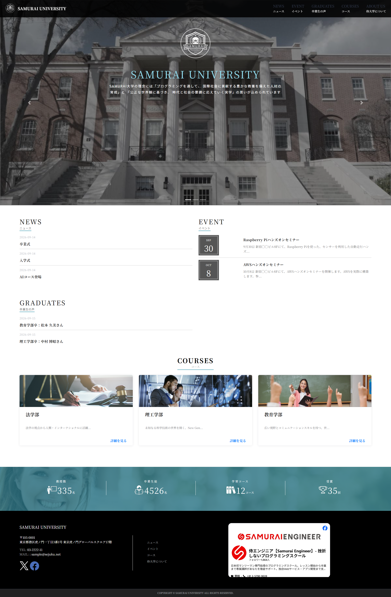

大学サイト
PHPの学習課題として、HTML/CSSで作成された大学サイトをWordPressのオリジナルテーマとして実装しました。
URL
https://maiworks01.xsrv.jp/samurai-university/

担当範囲
PHPを使用したWordPressのオリジナルテーマ化
制作時期
2026年9月
使用技術
PHP/WordPress
学習内容について
既存のHTML/CSSをもとに、PHPを使用してWordPressのオリジナルテーマ化に取り組みました。
テンプレート階層や投稿・固定ページの表示の仕組みを学び、静的なWebページをWordPressで管理・更新できるようにする方法について理解を深めました。
デザインについて
既存のデザインをもとにWordPressのオリジナルテーマ化を行ったため、デザインは担当しておりません。